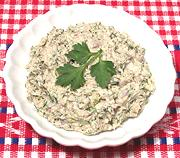

|
Sardine SpreadNorway - Sardinpålegg | ||||
| Makes: Effort: Sched: DoAhead: |
7 oz ** 15 min Best |
A very nice spread for crackers, bread and Scandinavian open face sandwiches. Flavor is excellent and not excessively "sardiny". | |||
|
2 4 2 1-1/2 3 3 2 1/4 |
can oz oz oz T T T t |
Sardines (1) Cream Cheese Celery Red Onion Dill, fresh Horseradish (2) Dijon Mustard Salt |
Make - (15 min work + an hour or more rest)
|